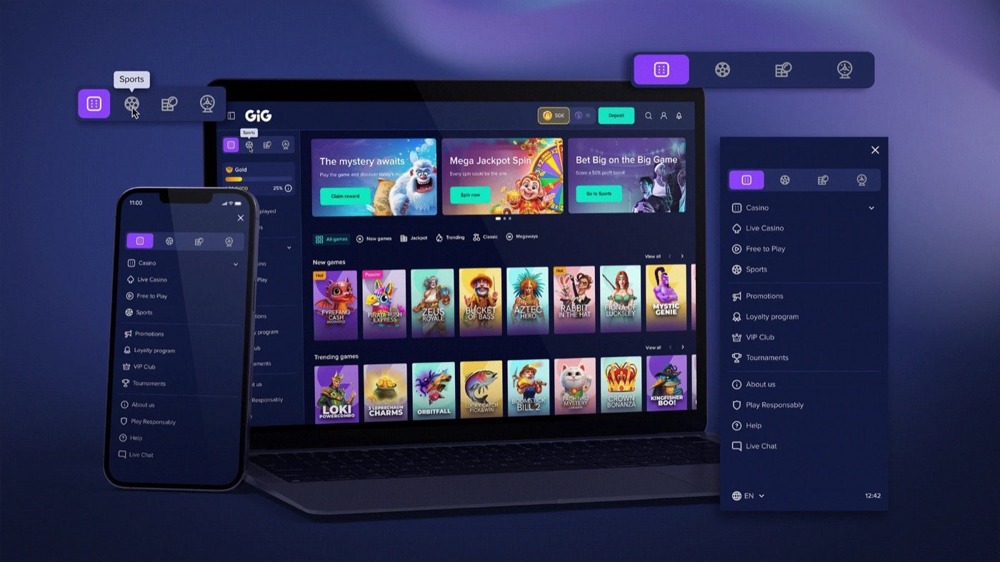
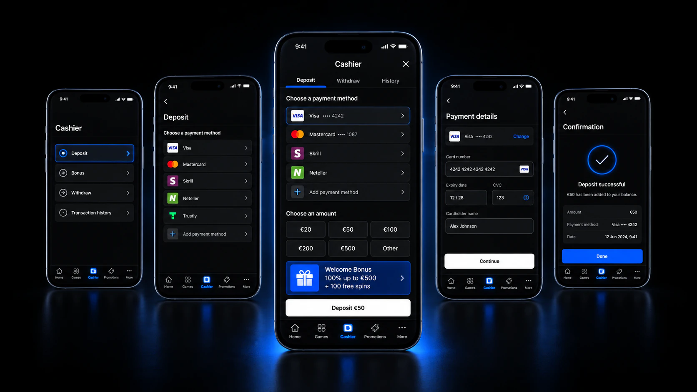
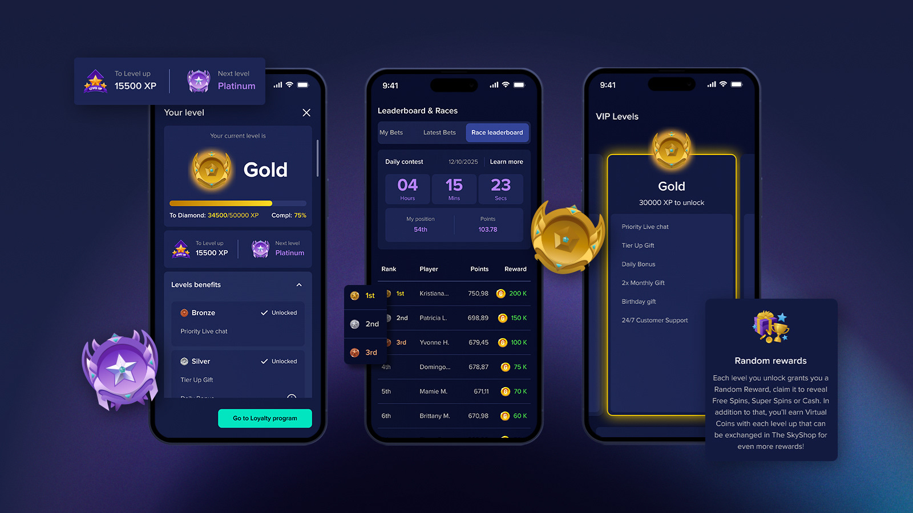
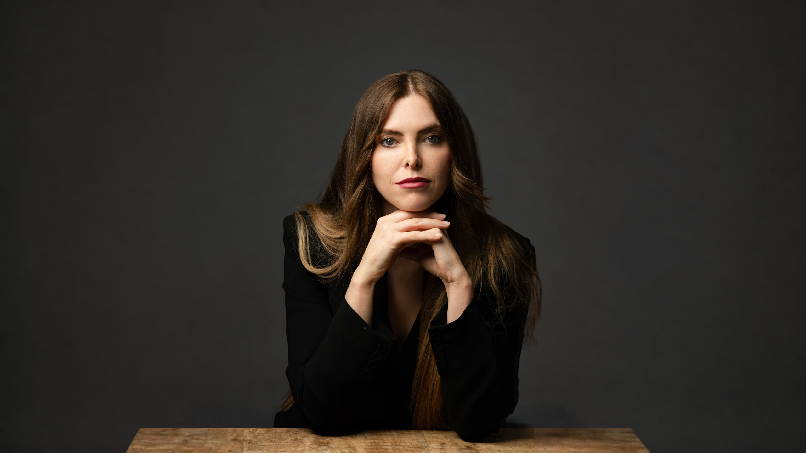

Designing
digital
products.
I’ve learned that great products need
Delivery efficiency
0%
faster client delivery
Enabled by a multi-brand design system
built with Figma variables.

XSITE · A white-label casino platform, rebuilt from the foundations

WAND · Cashier

XSITE · Loyalty & gamification
22
launched
across
15
markets.
Product strategy.
01Research insights
02Product opportunities
03Prioritisation
04Roadmap
Primary button
Search games…
color/brand/primary
color/text/default
Card titleSupporting text
Aa · Heading / Display
spacing/16 · radius/12 · brand: WAND
Design systems.
Team of 7 designers
Product
Engineering
Research
AI agents
Design leadership.
Because making
feel simple
Is the kind of design
problem I love.

MARÍA MORA
LEAD PRODUCT DESIGNER
moragarciamaria@gmail.com